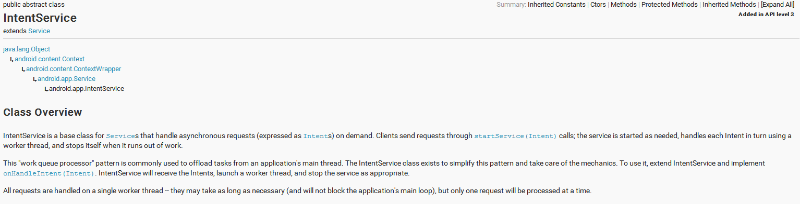

上次面试的时候第二个面试官问我IntentService，遗憾当时不知IntentService是阿方神圣。今天特学习一下。
先上一段官网的简介：

通过上面简介可知，IntentService是继承于Service的，用于处理异步请求的，我们通过实现OnHandleIntent处理我们的逻辑，处理完之后，stop自己。其实通过阅读源码我们可以发现，IntentService内部实例了一个HandlerThread，我们start IntentService，请求的任务都是在那个HandlerThread处理。IntentService源码片段如下：
private final class ServiceHandler extends Handler {
public ServiceHandler(Looper looper) {
super(looper);
}
@Override
public void handleMessage(Message msg) {
onHandleIntent((Intent)msg.obj);
stopSelf(msg.arg1);
}
}
@Override
public void onCreate() {
super.onCreate();
//初始了一个HandlerThread
HandlerThread thread = new HandlerThread("IntentService[" + mName + "]");
thread.start();
mServiceLooper = thread.getLooper();
//根据HandlerThread中的Looper初始了一个Handler
mServiceHandler = new ServiceHandler(mServiceLooper);
}
@Override
public void onStart(Intent intent, int startId) {
Message msg = mServiceHandler.obtainMessage();
msg.arg1 = startId;
msg.obj = intent;
mServiceHandler.sendMessage(msg);
}
public int onStartCommand(Intent intent, int flags, int startId) {
onStart(intent, startId);
return mRedelivery ? START_REDELIVER_INTENT : START_NOT_STICKY;
}
下面写一些代码实践刚学的知识，顺带复习一下HandlerThread的使用方法.
首先定义一个IntentService。
package com.example.handlerthreaddemo;
import java.util.concurrent.TimeUnit;
import android.app.IntentService;
import android.content.Intent;
import android.util.Log;
public class MyIntentService extends IntentService {
//必须实现一个默认构造方法
public MyIntentService() {
super("MyIntentService");
}
@Override
protected void onHandleIntent(Intent intent) {
try {
Log.d("ljhtest", "开始sleep 30秒");
TimeUnit.SECONDS.sleep(30);
Log.d("ljhtest", "结束sleep 30秒");
} catch (InterruptedException e) {
Log.d("ljhtest", "onHandleIntent发生异常");
}
}
}
接着写MainActivity。
package com.example.handlerthreaddemo;
import android.app.Activity;
import android.content.Intent;
import android.os.Bundle;
import android.os.Handler;
import android.os.Handler.Callback;
import android.os.HandlerThread;
import android.os.Message;
import android.view.View;
import android.view.View.OnClickListener;
import android.widget.Toast;
public class MainActivity extends Activity {
private Handler.Callback mSubCallback = new Callback() {
@Override
public boolean handleMessage(Message msg) {
StringBuffer sb = new StringBuffer();
sb.append("mSubCallback回调\n").append("what:").append(msg.what).append("\n");
sb.append("currentThread:" + Thread.currentThread().getName());
Toast.makeText(MainActivity.this, sb.toString(), Toast.LENGTH_LONG).show();
return true;
}
};
private Handler mSubHandler;
@Override
protected void onCreate(Bundle savedInstanceState) {
super.onCreate(savedInstanceState);
setContentView(R.layout.activity_main);
HandlerThread handlerThread = new HandlerThread("HandlerThread");
handlerThread.start();
mSubHandler = new Handler(handlerThread.getLooper(), mSubCallback);
findViewById(R.id.btn_send_message).setOnClickListener(mOnClickListener);
findViewById(R.id.btn_begin_intentservice).setOnClickListener(mOnClickListener);
}
private OnClickListener mOnClickListener = new OnClickListener() {
@Override
public void onClick(View v) {
if (v.getId() == R.id.btn_send_message) {
mSubHandler.sendEmptyMessage(0);
}
else if (v.getId() == R.id.btn_begin_intentservice) {
Intent intent = new Intent(MainActivity.this, MyIntentService.class);
startService(intent);
}
}
};
}